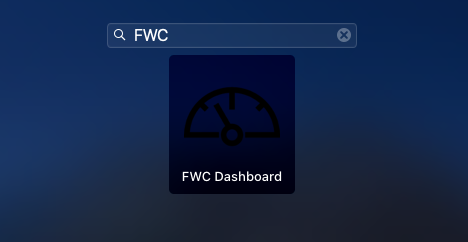
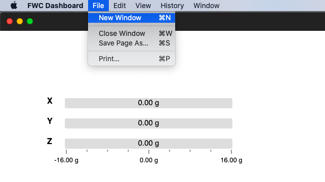
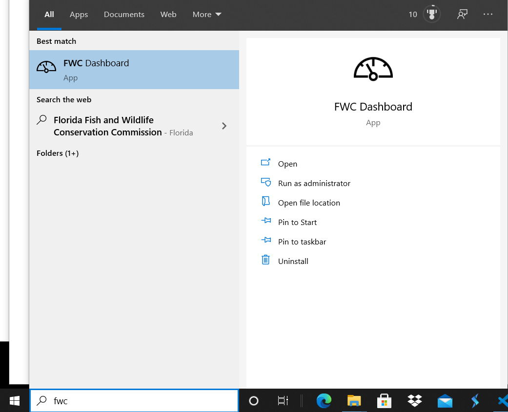

Running the Dashboard¶
These are the steps you need to perform to run the dashboard:
- To run the dashboard you must launch the app that was installed using a browser such as chrome, edge or firefox. Steps for each browser can be found below.
- Most components use NetworkTables to communicate information between the dashboard and the robot. Communicating over NetworkTables between a webpage and the robot requires a python package called pynetworktables2js be installed and run. To learn more follow the steps here: pynetworktables2js
- (optional) If you want to simulate your robot code using the FWC Dashboard as a front-end, follow the steps here: HALSim Websocket
To run the dashboard you must launch the PWA that was installed using a browser such as chrome, edge or firefox. Most components generally use NetworkTables to communicate information between the dashboard and the robot. To
Chrome Dashboard App¶
On macs the app should now be installed in the “Chrome Apps” folder:

You can then launch it from the “Chrome Apps” folder or by searching for “FWC Dashboard” using Splotlight:

or by searching for it using the Launchpad:
Clicking on the dashboard icon should launch it:

To launch multiple dashboard windows, go to the File menu and click New Window:
On windows the app should be installed in the “Chrome Apps” folder as well:

You can then launch it from the “Chrome Apps” folder or by searching for “FWC Dashboard” in the searchbar:
You can also create a shortcut of the app and launch it from your desktop:

Clicking on the dashboard icon should launch it: